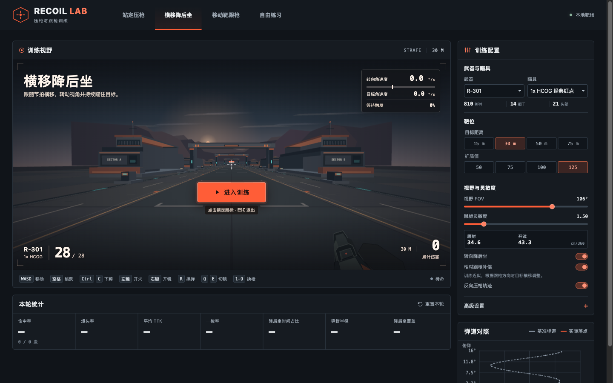
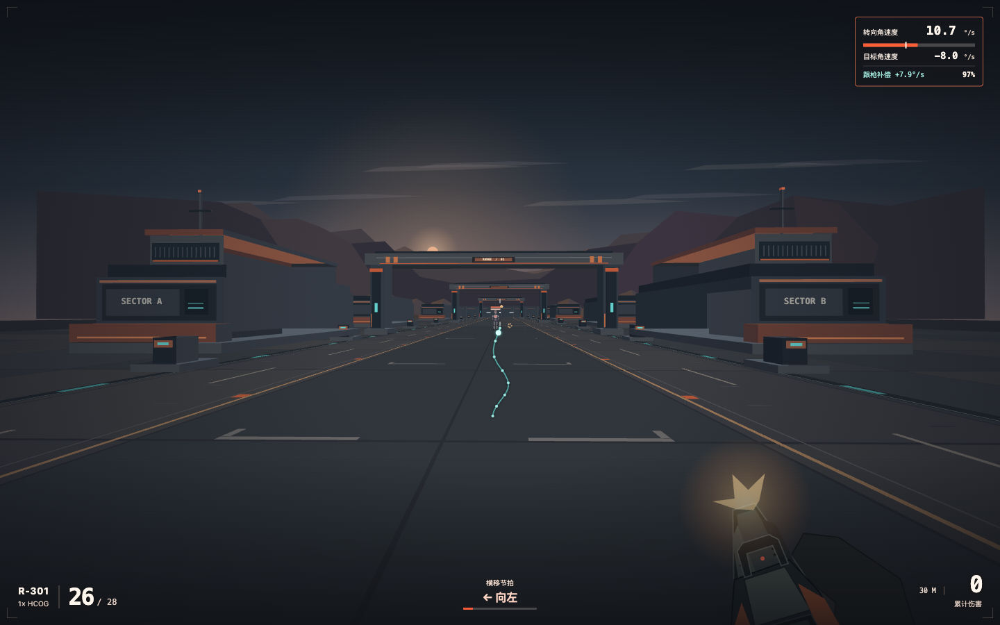
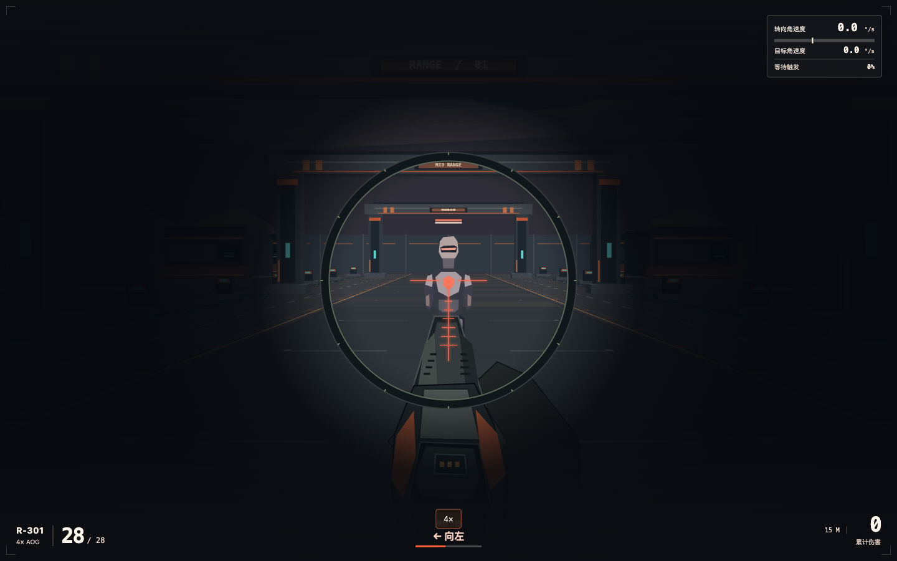

RECOIL LAB
Apex 风格的 PC 键鼠压枪与跟枪靶场。支持九把武器、六种瞄具，以及站定压枪、横移降后坐、移动靶跟枪和自由练习。
在线训练 · 下载离线 HTML
训练截图
训练设置
在右侧选择武器、瞄具和靶距。cm/360 会随鼠标 DPI 与灵敏度更新，两个降后坐开关可用于对照练习。

横移跟枪
按 A/D 横移，同时用鼠标跟住假人。右上角显示目标角速度、匹配角速度和横向降后坐比例。青色线是武器的整梭压枪参考轨迹，亮点随击发前进。

4× 开镜
选用 2×–4× AOG，开镜时按 Shift 切换倍率。可以在不同靶距测试角速度变化，或用自由练习同时比较几个靶位。

相对跟枪补偿
EA 的 PC 设置指南说明，开火时横向移动准星有助于减轻后坐力。靶场的相对跟枪补偿属于训练近似，使用目标相对视线的横向角速度与同向鼠标转动的匹配程度。EA PC 设置指南
操作
点击靶场锁定鼠标，Esc 暂停。左键开火，右键开镜，WASD 移动，Ctrl 或 C 下蹲，Space 跳跃，1–9 换枪，R 换弹，Q 或 E 切换瞄具。
本地开发
npm ci
npm run dev
npm run check
npx tsc --noEmit
npm run build
构建在 release/ 下生成版本化单文件。画面和音效由代码生成，武器弹道和换弹时间采用训练近似。